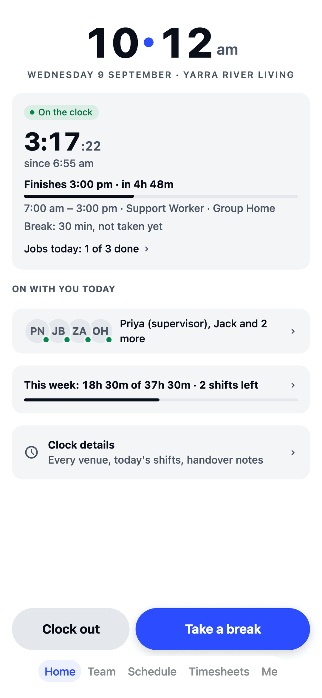
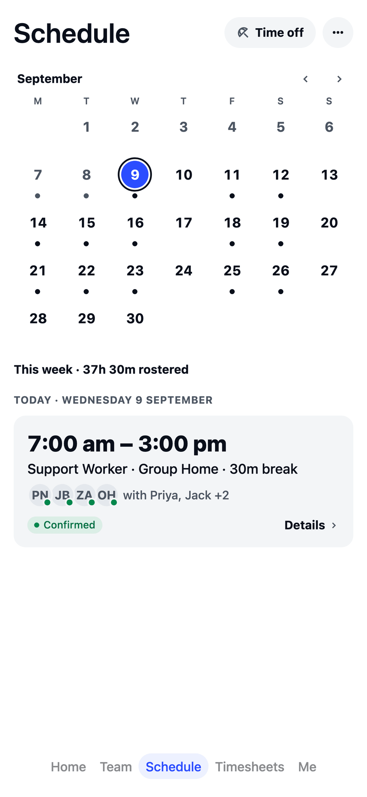
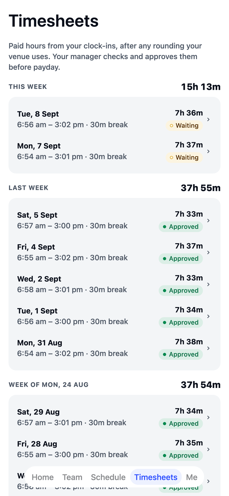

Every shift and visit
covered. Sorted.
Keep every house staffed and every community visit covered, keep NDIS Worker Screening Checks up to date, and give support workers their week on their phone.
House and community
Group homes and community visits on one roster, so you see who’s at the house and who’s out with clients.
Checks on file
Track NDIS Worker Screening Checks, Police Checks and First Aid, and see when each one is due to run out.
Gaps, spotted early
Set your own “at least one support worker with First Aid on” rule and the roster lists any hour that falls short.
Built around a support week.
Pick "Disability or home care" in the welcome wizard and your team is set up in minutes: no implementation call, no sales demo.
- Your team, ready to go Support workers, team leaders and a coordinator, plus a typical week to start from: a group home staffed around the clock in three 8-hour shifts, and community visits on weekdays, morning and afternoon.
- NDIS Worker Screening Checks and more Track who holds what and when it runs out: NDIS Worker Screening Checks, Police Checks, Working with Children Checks, First Aid, CPR, Manual Handling and driver licences. Keep the card number and state on file, and get a warning before you roster someone without one.
- Your own skill mix “At least 1 support worker with First Aid on, around the clock.” Set the rule once; the Schedule page and the Monday summary list any hour that falls short, and Build my week tries to fill it. You choose the numbers.
- Suggested rules for disability and home care A meal break on shifts longer than 5 hours, 10 hours off between shifts, no shift longer than 8½ hours and none shorter than 2. Common starting points: you check them, switch them on, and change any number.
- Clock in where the work is Each house can have its own location check, plus an optional photo on each clock-in, so hours match who was actually there.
- Handover notes What the night shift wants the morning shift to know.
- Someone calls in sick? Post it as an open shift, free support workers ask for it from their phone, and you pick who takes it.
- Announcements people confirm A client’s new routine, a change to the house roster: see who’s read it.
The app your support workers will actually open.
Shifts land in their pocket the moment you publish, with the place and the times, and in their phone calendar too. No more texting the week out one by one.



Free for your first 10 staff.
Actually free.
Not a trial. No card details, no locked features. One honest price when you grow past 10.
Start freeQuestions disability and home care services ask.
Can I keep track of NDIS Worker Screening Checks?
Yes. Record each NDIS Worker Screening Check, Police Check and Working with Children Check and when it runs out, along with First Aid, CPR and a driver licence, and TEAM MATE warns you before you roster someone who doesn't have one.
Does it work for a group home and community visits?
Yes. A group home and your community work are separate areas, so you see who's at the house and who's out with clients.
Can it tell me when a house is short?
Yes. Set your own rule, like "at least 1 support worker with First Aid on, around the clock", and the roster lists any hour that falls short. You choose the numbers.
How do support workers see their shifts?
On their phone. Shifts land the moment you publish, with the place and the times, and they clock in and out from the same app.
Built for every crew.
TEAM MATE started in Melbourne cafés and restaurants. The same app runs all of these crews too, each with its own setup in the welcome wizard.